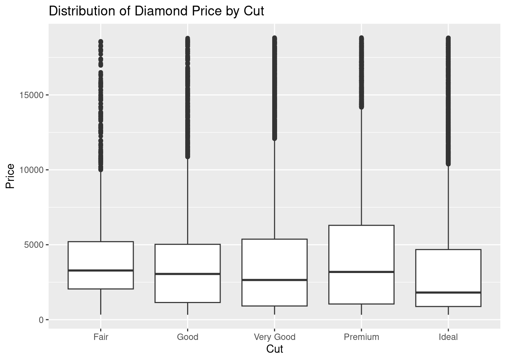

# Install ggplot2 if you haven't already
# install.packages("tidyverse")
# Load the tidyverse library
library(tidyverse)Week 4 - Choosing the right analyses & Hypothetical-Deductive reasoning
RMDA ARES40011
Preparation
Learning objectives
| Research Methods | Data Analyses |
|---|---|
| Understand hypothetical-deductive reasoning | Identify types of variables |
| Use ggplot for visualize data | |
| Choose appropriate statistical test |
Readings and videos
Read this Book chapter
Have a look at this youtube tutorial
Check this video class on Hypothetico-Deductive method
Lesson
Part 1 - Research Methods

source:https://courses.lumenlearning.com/suny-psychologyresearchmethods/chapter/4-3-using-theories-in-psychological-research/
This document provides an explanation of the hypothetico-deductive method (HD method), a proposed description of how scientific inquiry often proceeds. We will compare it with inductivism, discuss its application through real-world examples, and conclude with a roadmap for applying the HD method in research, drawing upon the provided sources.
The Hypothetico-Deductive Method Explained
The hypothetico-deductive method is a process where scientific investigation begins with the formulation of a testable hypothesis . The core idea is that a hypothesis can be potentially falsified by observations that contradict its predictions. If the observations align with the predictions, the hypothesis is corroborated, making it more plausible, but not definitively proven true.
The general steps of the HD method are as follows:
- Identify a question or problem: Begin by recognising an issue or question that requires an answer. This may involve using prior experience, gathering data, and considering existing explanations. Exploratory Data Analysis (EDA), which uses visualisation and transformation to explore data, can be a crucial initial phase to generate questions about your data. The goal during EDA is to develop an understanding of your data by asking questions that focus your attention and help you decide which graphs, models, or transformations to make.
- Formulate a conjecture (hypothesis): Propose a potential explanation for the identified problem. This hypothesis should be specific and testable. It needs to be formulated in a way that can be proven true or false through experimentation with scientific data. Avoid ambiguous terms like “good” or “bad”.
- Deduce predictions from the hypothesis: Derive observable consequences that would follow if the hypothesis were true. These predictions should specify what you expect to see or measure. The deduction moves from a general statement (the hypothesis) to specific expectations.
- Test the predictions: Conduct observations or experiments to see if the predictions hold true. The experiment should ideally have a control group and a real group to allow for comparison. Look for evidence that might conflict with your predictions, as the focus is often on attempting to disprove the hypothesis. Seeking direct proof of the hypothesis through its predictions is a logical fallacy.
- Determine whether the observations match or contradict the predictions: Evaluate the results of your tests.
- If the observations match the predictions, the hypothesis is corroborated or rendered more probable.
- If the observations contradict the predictions, the hypothesis is disconfirmed, and you may need to revise or formulate a new hypothesis.
It is important to note that the HD method primarily aims to falsify hypotheses rather than definitively prove them. As paraphrased from Albert Einstein, “No amount of experimentation can ever prove me right; a single experiment can prove me wrong”.
In practice, testing a prediction often relies on auxiliary hypotheses. These are additional assumptions about the equipment or conditions of the experiment. If a prediction fails, it might be because the main hypothesis is wrong, or because one of the auxiliary hypotheses is incorrect.
Difference from Inductivism
The core distinction between the hypothetico-deductive method and inductivism lies in their starting point and the direction of reasoning.
- Inductivism suggests that scientific reasoning begins with numerous unbiased observations, from which inductive generalisations are drawn to form theories. The main challenge with this view is that hypotheses often precede and guide the observation process.
- The hypothetico-deductive method, conversely, starts with a hypothesis (a proposed explanation) before making specific observations to test that hypothesis. The reasoning then proceeds deductively to derive testable predictions.
While the HD method uses deduction to generate predictions (“if H, then O”), evaluating the hypothesis based on the observed outcome is an inductive inference. A correct prediction increases our confidence in the hypothesis but doesn’t guarantee its absolute truth. Inductivism focuses on building general theories inductively from specific observations. The HD method recognises that hypotheses often come first and direct the search for and interpretation of observations, highlighting the creative aspect of science in generating ideas.
Real-World Examples
- The Faulty Music Player:
- Problem: A music player does not turn on.
- Hypothesis: The batteries are dead.
- Prediction: Replacing the batteries will make the music player work.
- Test: Replace the batteries.
- Outcome: If the player works, the hypothesis is corroborated. If not, it is disconfirmed.
- Bo’s Law:
- Hypothesis: For a gas at a constant temperature, pressure is inversely proportional to volume.
- Prediction: If the volume of a gas in a sealed container is halved, the pressure will double.
- Test: Halve the volume and measure the pressure.
- Outcome: If the pressure doubles, the hypothesis is corroborated. As noted, this confirmation is an inductive inference. It’s also important to remember that Bo’s law describes an ideal gas and has limitations for real gases under extreme conditions.
- Discovery of Neptune (as discussed previously):
- Problem: The orbit of Uranus deviated from predictions based on Newtonian physics.
- Hypothesis: There is an undiscovered planet whose gravitational pull affects Uranus’s orbit.
- Prediction: Based on the deviations, the location of this new planet can be calculated, and astronomers should find it there.
- Test: Astronomers searched in the predicted location.
- Outcome: The discovery of Neptune corroborated the hypothesis.
Roadmap to Applying Hypothetico-Deductive Reasoning to Research
To apply the hypothetico-deductive method in research, follow these steps:
- Identify a clear research question or problem. This often stems from observations, existing theories, or gaps in knowledge. Exploratory data analysis (EDA) is a valuable initial step to uncover patterns and formulate relevant questions about your data. Define your research question with specific variables in mind.
- Formulate a specific and testable hypothesis. This hypothesis should propose a potential answer to your research question and be capable of being proven true or false with scientific data. Consider the types of variables involved, such as categorical, continuous, nominal, ordinal, or scale, as this will influence how you can test your hypothesis.
- Deduce one or more observable predictions from your hypothesis. These predictions should clearly state what you would expect to observe or measure if your hypothesis is correct.
- Design and conduct a study or experiment to test these predictions. This may involve collecting new data or analysing existing datasets. The design should allow for the measurement of changes and ideally include control and experimental groups for comparison.
- Analyse the data collected to determine if the observations align with your predictions. This step often involves using statistical tests, and the choice of test depends on your research question, the type of data (e.g., nominal, ordinal, scale, normally distributed or skewed), the number of variables, and whether the comparisons are between independent or paired groups. Visualising distributions using bar charts for categorical variables, histograms for continuous variables, and examining covariation between variables using boxplots or scatterplots are essential parts of this analysis. You will need to consider the assumptions of any statistical tests you use and understand the concept of statistical significance and p-values.
- Evaluate your hypothesis based on the results.
- If the predictions are supported by the data, your hypothesis is corroborated, and its plausibility increases [3, 4]. However, remember that this is not definitive proof.
- If the predictions are not supported by the data, your hypothesis is disconfirmed, and you may need to revise it or propose a new one. Consider whether any auxiliary hypotheses might have been incorrect.
- Refine and repeat the process. Scientific inquiry is often iterative. Even if your hypothesis is corroborated, further testing with different predictions and in various contexts is usually necessary to build a robust and well-supported theory.
By following this systematic approach, researchers can use the hypothetico-deductive method to investigate questions, test their ideas against evidence, and contribute to the body of scientific knowledge. Seeking advice from statisticians during the planning phase is recommended to ensure appropriate statistical analysis.
Part 2 - Data Analyses
This document provides a brief tutorial on how to identify and describe different types of variables in a dataset. Understanding your data types is crucial for choosing appropriate exploratory data analysis (EDA) techniques and statistical tests. We will then explore how to generate insightful visualisations using the ggplot2 package in R for various combinations of variable types. Finally, an exercise will be provided for you to practice these concepts using pre-built R datasets.
First, ensure you have the necessary package installed:
1) Identifying and Describing Types of Variables
A variable is a quantity, quality, or property that you can measure. The value is the state of a variable when you measure it. Understanding the types of variables in your dataset is fundamental to performing effective data analysis. Here are the main types of variables you will encounter:
• Categorical Variables: These variables can take on a limited, and usually fixed, number of possible values. They represent qualities or groupings. In R, categorical variables are often stored as factors or character vectors.
◦ Nominal Variables: These are categorical variables without any intrinsic order or ranking. Examples include gender, eye colour, or types of fruit.
◦ Ordinal Variables: These are categorical variables that have a natural order or ranking among their categories. Examples include education level (e.g., high school, bachelor’s, master’s), customer satisfaction ratings (e.g., very dissatisfied, dissatisfied, neutral, satisfied, very satisfied), or the cut quality of a diamond (Fair, Good, Very Good, Premium, Ideal).
• Numerical (or Quantitative) Variables: These variables represent quantities that can be measured and often have a numerical value. In R, these are typically stored as numeric or integer data types.
◦ Continuous Variables: These can take on any value within a given range. Examples include height, weight, temperature, or the carat size or price of a diamond.
◦ Discrete Variables: These can only take on specific, separate values, often integers. Examples include the number of children in a family or the number of cars in a parking lot. It’s also useful to consider the role of variables in your analysis:
• Dependent Variable (Outcome Variable): This is the variable you are trying to understand, explain, or predict. Its value is thought to depend on other variables.
• Independent Variable (Explanatory Variable or Predictor): These are the variables that are thought to influence or explain the dependent variable.
Identifying the type and role of each variable in your dataset will guide your choice of visualisation techniques and statistical models.
2) Generating Exploratory Graphs using ggplot2
Exploratory Data Analysis (EDA) involves using visualisation and transformation to explore your data in a systematic way. ggplot2 is a powerful and flexible package in R for creating elegant and informative graphs. Let’s look at how to create plots for different combinations of variable types using the diamonds dataset, which is included in the ggplot2 package.
First, let’s load the dataset:
# Load the diamonds dataset
data(diamonds)
# Examine the structure of the dataset
str(diamonds)tibble [53,940 × 10] (S3: tbl_df/tbl/data.frame)
$ carat : num [1:53940] 0.23 0.21 0.23 0.29 0.31 0.24 0.24 0.26 0.22 0.23 ...
$ cut : Ord.factor w/ 5 levels "Fair"<"Good"<..: 5 4 2 4 2 3 3 3 1 3 ...
$ color : Ord.factor w/ 7 levels "D"<"E"<"F"<"G"<..: 2 2 2 6 7 7 6 5 2 5 ...
$ clarity: Ord.factor w/ 8 levels "I1"<"SI2"<"SI1"<..: 2 3 5 4 2 6 7 3 4 5 ...
$ depth : num [1:53940] 61.5 59.8 56.9 62.4 63.3 62.8 62.3 61.9 65.1 59.4 ...
$ table : num [1:53940] 55 61 65 58 58 57 57 55 61 61 ...
$ price : int [1:53940] 326 326 327 334 335 336 336 337 337 338 ...
$ x : num [1:53940] 3.95 3.89 4.05 4.2 4.34 3.94 3.95 4.07 3.87 4 ...
$ y : num [1:53940] 3.98 3.84 4.07 4.23 4.35 3.96 3.98 4.11 3.78 4.05 ...
$ z : num [1:53940] 2.43 2.31 2.31 2.63 2.75 2.48 2.47 2.53 2.49 2.39 ...See this link for a summary of the dimanonds dataset
a) Categorical x Categorical
To visualise the relationship between two categorical variables, we can use a bar chart with a fill aesthetic or a geom_count plot. Another effective method is using geom_tile to create a heatmap of the counts.
# Bar chart with fill
ggplot(diamonds, aes(x = cut, fill = color)) +
geom_bar(position="fill") +
labs(title = "Distribution of Diamond Color by Cut",
x = "Cut",
y = "Count",
fill = "Color")# geom_count
ggplot(diamonds, aes(x = cut, y = color)) +
geom_count() +
labs(title = "Joint Distribution of Diamond Cut and Color",
x = "Cut",
y = "Color",
size = "Count")# geom_tile
diamonds_counts <- diamonds %>%
dplyr::count(color, cut)
ggplot(diamonds_counts, aes(x = color, y = cut, fill = n)) +
geom_tile() +
labs(title = "Heatmap of Diamond Cut and Color Combinations",
x = "Color",
y = "Cut",
fill = "Count")In these plots, geom_bar shows the count of each cut category, with bars segmented by color. geom_count displays the frequency of each cut-color combination using the size of circles. geom_tile uses colour intensity to represent the counts of each combination. These visualisations help reveal if certain combinations of categorical variables are more frequent than others.
b) Categorical x Numerical
To explore the distribution of a numerical variable across different categories, boxplots are highly effective. We can also use violin plots or frequency polygons (though boxplots are often preferred for this comparison).
# Boxplot
ggplot(diamonds, aes(x = cut, y = price)) +
geom_boxplot() +
labs(title = "Distribution of Diamond Price by Cut",
x = "Cut",
y = "Price")
# Violin plot
ggplot(diamonds, aes(x = cut, y = price)) +
geom_violin() +
labs(title = "Distribution of Diamond Price by Cut",
x = "Cut",
y = "Price")The boxplots show the median, quartiles, and potential outliers of the price for each cut category, allowing for easy comparison of the distributions. Violin plots provide a smoothed density estimate of the distribution.
c) Numerical x Numerical
The primary way to visualise the relationship between two numerical variables is using a scatterplot with geom_point(). For large datasets, you might need to adjust the alpha (transparency) to handle overplotting or use 2D binning with geom_bin2d() or geom_hex().
# Scatterplot
ggplot(diamonds, aes(x = carat, y = price)) +
geom_point() +
labs(title = "Relationship between Diamond Carat and Price",
x = "Carat",
y = "Price")# Scatterplot with transparency for large datasets
ggplot(diamonds, aes(x = carat, y = price)) +
geom_point(alpha = 0.1) +
labs(title = "Relationship between Diamond Carat and Price (with Transparency)",
x = "Carat",
y = "Price")# 2D binning
ggplot(diamonds, aes(x = carat, y = price)) +
geom_bin2d() +
labs(title = "2D Binning of Diamond Carat and Price",
x = "Carat",
y = "Price")
The scatterplot reveals patterns or trends in the relationship between carat and price. Transparency helps when many points overlap. 2D binning divides the plot area into bins and colours them based on the number of points within each bin, highlighting areas of high density.
d) Numerical x Categorical (treating categorical as y)
This is NOT conceptually the same as (b) Categorical x Numerical. This is actually applied to logistic models where response variables are categorical as a function of numerical factors.
diamonds %>%
filter(color == c("J", "D")) %>% #diamond colour, from J (worst) to D (best)
mutate(color2= ifelse(color=="J",0,1)) %>% # tranforming categories into binary numbers 0 = worst and 1 = best
ggplot(aes(x = price, y = color2)) +
geom_jitter(height = .1, alpha=0.2) + # expore these argumentes using documentation
geom_smooth(method = "glm",
method.args=list (family="binomial"), se=FALSE)+
labs(title = "",
x = "Price (USD)",
y = "Color")`geom_smooth()` using formula = 'y ~ x'This plot shows an interesting pattern: high-prices diamonds tend to present the “worst” colour. At least this is what the graph suggests.
Exercise
Use the built-in iris dataset in R to practice identifying variable types and creating exploratory graphs with ggplot2. First, load the iris dataset and examine its structure:
Tasks:
Identify the type of each variable in the
penguinsdataset (species, island, bill_length_mm, bill_depth_mm, flipper_length_mm, body_mass_g, sex, year). Describe whether each variable is numerical (continuous or discrete) or categorical (nominal or ordinal).Create a scatterplot to explore the relationship between
bill_length_mm(x-axis) andflipper_length_mm(y-axis). Add colour to the points based on thespeciesof the penguin. Add appropriate titles and labels to your plot using labs().Generate a boxplot to visualise the distribution of
body_mass_g(y-axis) for eachspecies(x-axis). Add a title and labels.Create a bar chart to show the count of each
speciesin the dataset. Add appropriate labels.Explore the relationship between
bill_depth_mmandspeciesusing a visualisation method of your choice (e.g., boxplot, violin plot). Justify why you chose that particular method.
This exercise will help you solidify your understanding of variable types and how to use ggplot2 to create meaningful exploratory visualisations. Remember that Data Analysis is an iterative process, so feel free to create other plots and ask questions about the patterns you observe in the iris dataset.
Refecences used
Wickham, Hadley, and Garrett Grolemund. (n.d.). [7 Exploratory Data Analysis | R for Data Science](https://r4ds.had.co.nz/exploratory-data-analysis.html.
UCLA OARC. (2024). Choosing the Correct Statistical Test in SAS, Stata, SPSS and R. Retrieved from stats.oarc.ucla.edu. (Adapted from Leeper, James D., Ph.D., Choosing the Correct Statistic).
Nayak, Barun K., and Avijit Hazra. (2011). How to choose the right statistical test? Indian Journal of Ophthalmology, 59(2), 85–86. https://doi.org/10.4103/0301-4738.77005
Mangiafico, Salvatore S. (2016). R Handbook: Choosing a Statistical Test (version 1.20.07, revised 2024). Retrieved from rcompanion.org/handbook/. (Part of Summary and Analysis of Extension Program Evaluation in R).
Maths Skills Centre, University of York. (Last Updated: Apr 9, 2025). Which statistical test? - Maths Skills Centre: a practical guide to maths & statistics - Subject Guides at University of York. Retrieved from https://subjectguides.york.ac.uk/maths-skills-centre/which-statistical-test.
Ranganathan, Priya. (2021). An Introduction to Statistics: Choosing the Correct Statistical Test. Indian Journal of Critical Care Medicine, 25(Suppl 2), S184–S186. https://doi.org/10.5005/jp-journals-10071-23815
Marshall, Ellen. (n.d.). The Statistics Tutor’s Quick Guide to Commonly Used Statistical Tests. statstutor community project, stcp-marshallowen-7. Retrieved from www.statstutor.ac.uk.